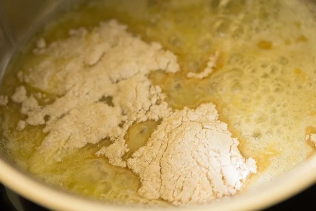
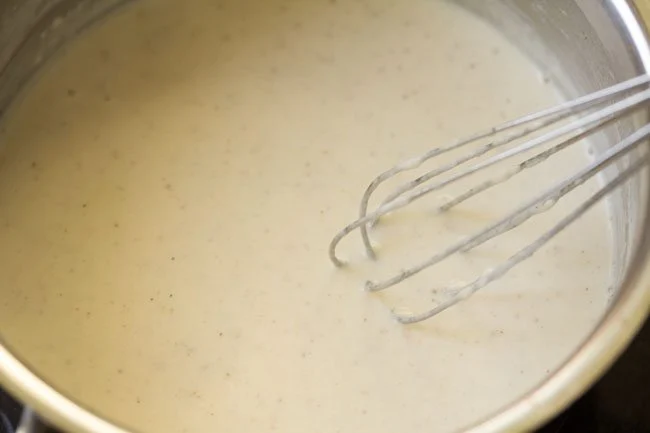
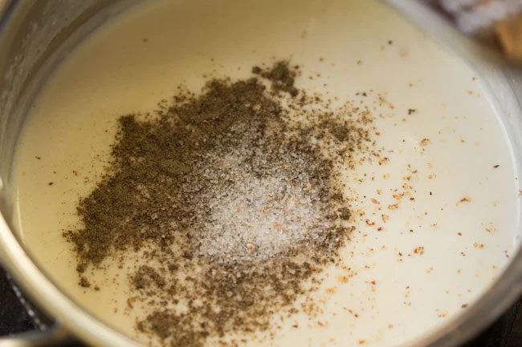
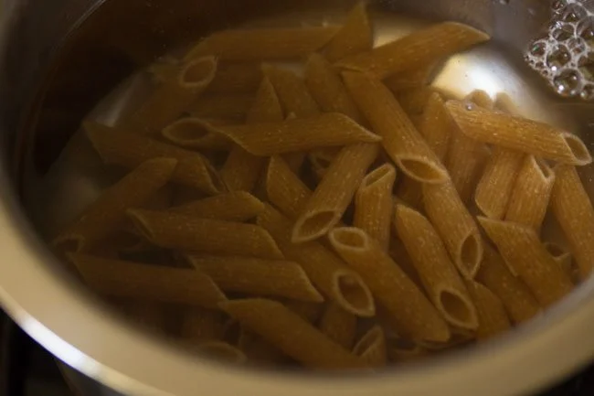

White Sauce Pasta recipe is an easy-to-make dish of cooked penne pasta in
a smooth, creamy and delicious white sauce a.k.a Béchamel sauce. Here, you
just have to prepare the white sauce, which is a mixture of all-purpose
flour or whole wheat flour, butter, milk and spices, pour it over the
penne and toss well. This popular White Sauce Pasta Recipe is a vegetarian
version and can be served as a snack or light dinner. You can make it more
wholesome and hearty by adding some mixed vegetables.
Ingredients Required:
Whole-wheat pasta
Vegetables of choice
Black pepper
Butter
Cheese
Milk




Instructions:
Heat a saucepan. Keep the heat to low and add 2 tablespoons butter.
You can use salted or unsalted butter.
When the butter melts and starts to bubble, add 1 tablespoon whole
wheat flour (atta) or choose to swap 2 tablespoons all-purpose flour
(maida) with the whole wheat flour.
Using a wired whisk, stir the flour quickly as soon as you add it.
Keep stirring so that no lumps are formed. The frequent stirring
helps the flour to cook evenly. You will see the flour frothing and
bubbling up while stirring. Sauté until you get a nice cooked aroma
and the flour is a pale golden color. Don’t brown the flour.
Keep heat on low and pour 1 cup cold or chilled milk in a gentle
stream with one hand and stir the sauce mixture with the other.
Stir frequently, while the milk heats up.
On low heat, simmer the sauce till it thickens. When the sauce has
thickened well and coats the back of a spoon, turn off the heat.
Remove the saucepan from the heat and place on the kitchen
countertop. Add the seasonings, ¼ teaspoon black pepper powder, a
generous pinch of nutmeg powder or grated nutmeg and salt as
required. For a cheese sauce, you can add 2 tablespoons of
grated/shredded cheddar cheese or 1 to 2 tablespoons of grated
vegetarian parmesan cheese.
Mix very well and set aside. Keep in mind that the sauce will
thicken as it cools, so keep the consistency accordingly.
Boil 4 cups water with ½ teaspoon salt in a pan.
When the water comes to a boil, add 1 cup penne pasta.
Cook the pasta on a medium to high heat.
When the pasta gets done to an al dente texture, turn off the heat.
For a more softer texture, cook the pasta a little longer. Strain
the pasta with a large strainer spoon.
Then, add the cooked penne pasta to the prepared white sauce.
Add ¼ teaspoon each of dried oregano, dried basil and dried thyme.
Or add your choice of herbs. At this step, you can add some steamed,
cooked, sautéed or roasted vegetables too, if you like.
Mix very well.
Serve White Sauce Pasta garnished with some fresh herbs like
parsley, cilantro, basil, chives or dill. You can also garnish with
some grated cheddar cheese.